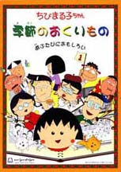

Chibi Maruko-chan

Useful Links
Anime Web Turnpike: Chibi Maruko-chan Links
(you have to scroll down a bit)
Gameboy Games
Chibi Maruko-chan: o-kodzukai DAISAKUSEN
Genesis Games
Chibi Maruko-chan Waku Waku Shopping
PC-Engine Games
Chibi Marukochan Quiz de Pihyara
SNES Games
Chibi Marukochan Harikiri 365 Days
Chibi Marukochan: Mizase! Minami no Island!
Anime Video Game Resource Center © 1998 by
Luis A. Cruz